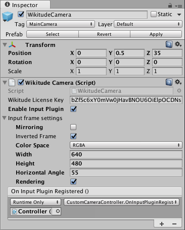

Input Plugins API
The input plugins API provides a means to alter the inputs and outputs of the Wikitude Native SDK. For the input case specifically, custom frame data of arbitrary sources can be supplied as an input to the Wikitude SDK Native API for processing. Complementary, for the output case, the default rendering of the Wikitude SDK Native API can be substituted with more advanced implementations. Both cases are illustrated in two separate samples.
Unity interface
Input plugins are enabled by setting the Enable Input Plugins toggle in the WikitudeCamera script to true. Once you do that, a number of additional options will appear, allowing you to configure how the input plugin behaves.

Mirroringwill flip the frame horizontally before any processing and rendering is done. This is useful when you want to process the feed from the front facing camera.Inverted Framewill flip the frame vertically. The SDK expects the that the first row of pixels to correspond to the top of the image, because this is how the native cameras provide the data. However, when accessing the texture data from a Unity texture (includingWebCamTexture) withGetPixels32(), the first row of the data will correspond to the bottom of the image. You can set this toggle to automatically flip image to convert from Unity format to the one expected by the SDK. This option is available only when theColorSpaceisRGBA.ColorSpacetells the SDK what the format of the frame is. Supported values are the following:YUV_420_NV21: Represents a color space where image data is given in a YUV 420 format, arranged to be compliant to the NV21 standard. The data size is frame width * frame height * 3/2, meaning full luminance resolution and half the size for chroma red * chroma blue.RGB: Represents a color space where image data is given in a RGB format. The data size is frame width * frame height * 3 (R, G and B channel).RGBA: Represents a color space where image data is given in a RGBA format. The data size is frame width * frame height * 4 (R, G, B, A channel). This is provided for convenience since this is the way Unity will return pixel data from a texture.
Widthof the frame.Heightof the frame.Horizontal Angleor FOV of the device used to capture the image.Renderingtoggle controls if the SDK will display the image on the screen.On Input Plugin Registeredcallback will let you know when the registration of the plugin is complete and it is safe to open the device camera. Before this callback is called, the SDK might still be using the camera and you will get errors when trying to access it.
Please keep in mind that the Mirroring and ColorSpace properties cannot be changed while the input plugin is running. To change them after the scene has started, you will need to recreate the Wikitude Camera with the new settings.
Custom Camera sample
The first sample shows how to grab the camera feed with Unity and send it to the Wikitude SDK for processing and rendering. The logic of the sample is contained in the CustomCameraController.cs script.
When the OnInputPluginRegistered event is called, we initialize the buffer required to store the frame data. In the Update function, once we get a valid frame, we get the pixels from it using the GetPixels32(Color32[]) method provided by the WebCamTexture class. To avoid additional copies of the data, we can obtain the native pointer to the data directly and send this to the SDK. The SDK will only read from this pointer during the duration of the call, so you don't need to keep the pointer around.
private void SendNewCameraFrame() {
GCHandle handle = default(GCHandle);
try {
handle = GCHandle.Alloc(_pixels, GCHandleType.Pinned);
IntPtr frameData = handle.AddrOfPinnedObject();
WikitudeCam.NewCameraFrame(++_frameIndex, _frameDataSize, frameData);
} finally {
if (handle != default(GCHandle)) {
handle.Free();
}
}
Custom Rendering samples
The second sample works very similarly to the first one, except that the frame is also sent to the another script called CustomCameraRenderer.cs, which handles rendering of the camera frame with a custom edge detection shader. This script is placed on the camera and uses a CommandBuffer to instruct Unity to blit the camera texture to the screen using a custom material.
_drawFrameBuffer = new CommandBuffer();
_drawFrameBuffer.Blit(_currentFrame, BuiltinRenderTextureType.CameraTarget, EffectMaterial);
camera.AddCommandBuffer(eventForBlit, _drawFrameBuffer);
The script also handles how to draw the camera frame when the aspect ratio of the feed doesn't match the aspect ratio of the screen.